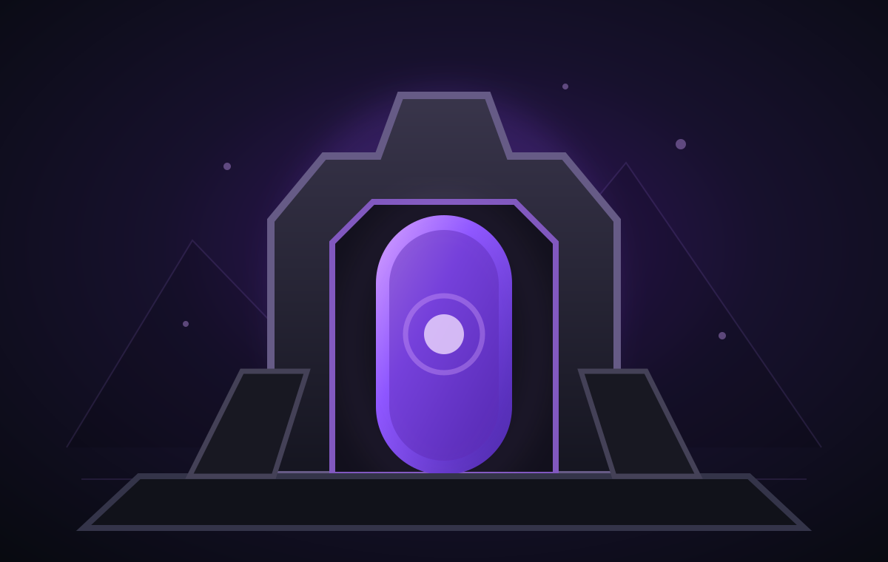

Threshold + Instance progression.
The current endgame begins with Prestige IV + Viking and continues through the Raphael, Azazel and Abyss + Astral difficulty ladder.
Permanent Nexus unlockRaphaelAzazelAbyss + Astral
Prestige IV and the Viking clear close Pixel's current world progression. That first threshold permanently unlocks the Nexus, where progression shifts from world gates to defined Instance difficulties.

Prestige IV proves the account milestone. Viking completes Winter's final combat milestone. Once both have been achieved, the Nexus remains available permanently instead of asking the player to repeat the world gate.
Raphael and Azazel are single-boss encounters. Abyss + Astral is one dual-boss encounter. Their visual treatment is separate because their progression roles are different.
The Nexus is the endgame destination, while the currently defined combat progression is carried by these Instances. Additional Nexus-specific combat belongs to future expansion rather than being presented as playable today.
Current structureThe endgame does not simply raise every boss at once. Each milestone adds a defined difficulty or encounter, making the path readable from Nexus entry through Legacy II.
These are player-facing progression facts, not internal implementation details.
Future additions extend the same endgame destination. They are intentionally separated from the current playable foundation so the website does not promise content before it exists.
The current endgame begins with Prestige IV + Viking and continues through the Raphael, Azazel and Abyss + Astral difficulty ladder.
Exclusive rotating items and rewards, progressive raids, progressive dungeons and The Crucible of Legends remain future expansion of the Nexus endgame.